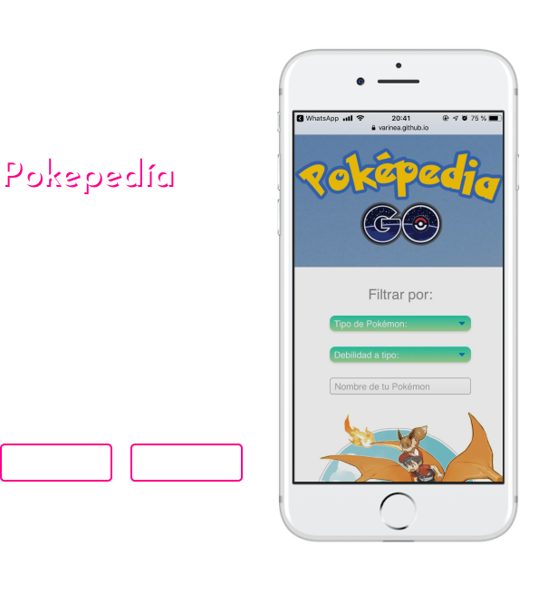
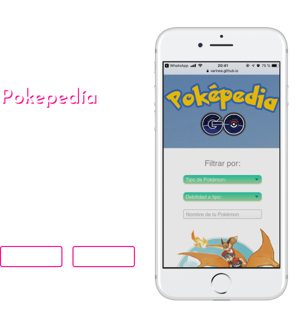

Soy Varinea López Garrido, me dicen Vari, me desempeño como Desarrolladora Web y Diseñadora Gráfica, vivo en Santiago, Chile. Me caracterizo por ser inquieta, creativa y siempre dispuesta a nuevos desafios, me gusta trabajar en equipo y lograr mis objetivos, buscando nuevos desafios y teniendo experiencia en el área de Diseño Grafico, quise explorar algo nuevo y relacionado a lo que he estado haciendo y es así como llegue a LABORATORIA , donde mi vida ha dado un vuelco, tanto de forma profesional como personal, desarrollandome como Front-End y agudizando mis habilidades blandas, sabiendo quien soy realmente y que deseo hacer. Ahora trabajo creando proyectos web y aplicaciones móviles utilizando lenguajes de programación de tendencias como Javascript y React JS, entre otros. ¡Te invito a conocer más de mi descargando mi curriculum y explorando más esta página!
Curriculum 
